Minor PlusStart a Map
Pick a source or just type a topic.
TopicType any subjectDocumentPDF, DOCX or TXTLinkArticle or web pageYouTubeVideo transcriptPlusVoiceTalk it throughPlusFrom ChatTurn a chat into a map

Minor PlusPick a source or just type a topic.